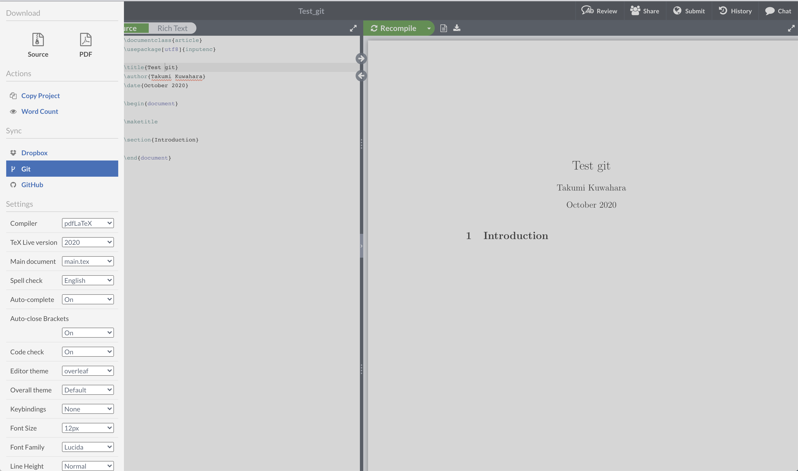
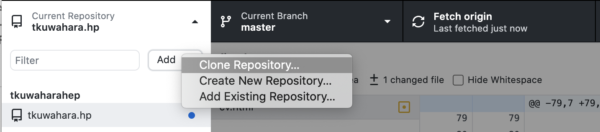
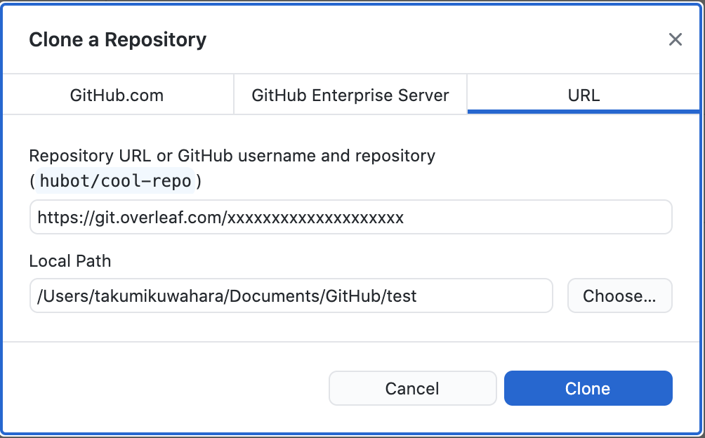

01本文
Overleafは複数人で原稿を同時編集するにはとても便利なオンラインLaTeXエディタではあるものの、オフラインの自分のエディタのほうが慣れていることも多い（overleafも様々なエディタを用意してくれている。用意されているカラーコードがどうにも慣れなくて、カラーコードを自分で編集する方法があればもっと良かった）。version管理もしてくれるGitとの連携（有料版オプション）で、オフラインでのファイル編集を行うことにした。[1]
以下に、備忘録としてOverleaf + Gitを用いてversion管理をしつつオフラインでのファイル編集を行う方法を簡単に書き記しておく。
- OverleafのMenu欄からGit linkを獲得

- オフライン上でレポジトリの追加
個人的に用いている、GitHub Desktopをベースにすすめる。レポジトリの追加は、GitHub Desktopの左上タブを開くと追加に関するタブがでてくる。

該当箇所をクリックすると、レポジトリを複製する方法が出てくるので、OverleafでコピーしたGit linkからローカルなレポジトリに複製すればよいだけである。

今のところ、上記の方法で問題なくoverleafの編集をオフラインで行い、pushするときにマージするという操作が出来ています。複数人で共同作業する際に、同時に編集している人がいる場合でも今のところ問題がなさそうである。
[1] 登録後 数日間は無料なので、試しに利用するのもありだと思う。以前は、Gitでの連携は無料オプションとして出来たような気もする。無料試用期間に利用していただけなのか、はたまた以前は本当に無料オプションだったのかはもはや覚えていない。